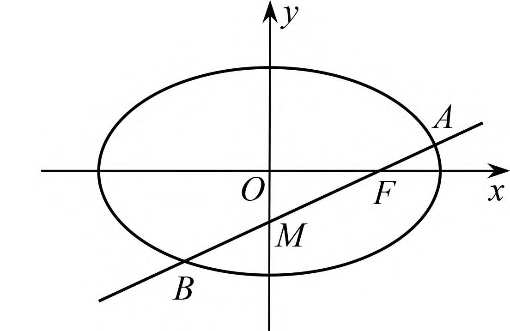
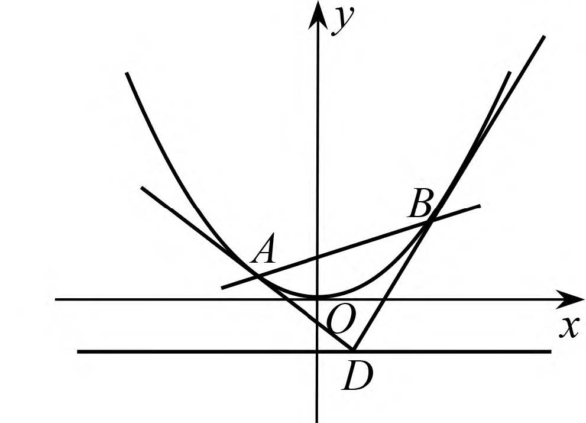
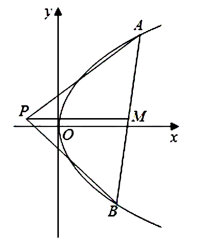
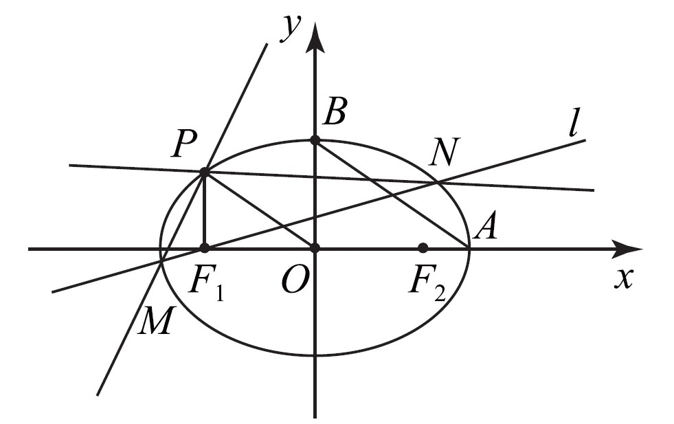
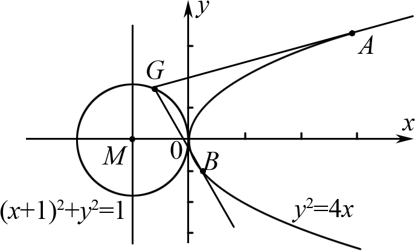

使用同构法提高效率
圆锥曲线的有关问题变量多，运算量大，有时部分学生在考试过程中不易做对。同构思想在解决问题时能优化计算，比起以往联立直线与曲线方程的常规方法，显然简便许多。当题目中出现具有相同结构、相同式子时，或过某一点处的切线等相似结构时，可以考虑采用同构法，从而达到提高解题效率的目的.
不要刻意使用同构法
并不是所有的圆锥曲线大题都可以用同构法，相反，只有一小部分可以使用。尽管这部分题目的规律有迹可循，但因同构思维并不是单独的考点，因此笔者仍建议考生见招拆招，而不要刻意凑同构。
(2022年新高考I卷21题)已知点\(A(2,1)\)在双曲线\(C\):\(\dfrac{x^{2}}{a^{2}}-\dfrac{y^{2}}{a^{2}-1}=1\)\((a>1)\)上，直线\(l\)交双曲线\(C\)于\(P,Q\)两点，直线\(AP,AQ\)的斜率之和为\(0\).求\(l\)的斜率.
答案
双曲线方程为\(\dfrac{x^{2}}{2}-y^{2}=1k=-1.\)
设而不求
设直线 \(l_{PQ}\)：\(y = kx + m\)，\(P(1,i)\)，\(Q(x_0,y_0)\)。
将条件\(\overrightarrow{AP}+\overrightarrow{AQ}=\overrightarrow{0}\)坐标化消去，得
\[\dfrac{k(x_0^2+m-1)}{2x_0k^2+(m-1-2k)(x_0+2)}-\dfrac{4(m - 1)}{2(x_0 - 2)} = 0\]
\(\begin{align}k_{AP}+k_{AQ}&=\frac{y_1 - 1}{x_1 - 2}+\frac{y_2 - 1}{x_2 - 2}\\&=\frac{kx_1 + m - 1}{x_1 - 2}+\frac{kx_2 + m - 1}{x_2 - 2}\\&=\frac{2kx_1x_2+(m - 1 - 2k)(x_1 + x_2)-4(m - 1)}{(x_1 - 2)(x_2 - 2)}\\&=0\end{align}\)
联立直线\(PQ\)与双曲线方程，利用韦达定理化简得\(\begin{align*}4(k + 1)(m + 2k - 1)&=0\end{align*}\)，
分类讨论得\(\begin{align*}k = -1.\end{align*}\)
设而求之
易知直线\(AP\)，\(AQ\)的斜率存在，设\(l_{AP}:y - 1 = k_1(x - 2)\)，\(l_{AQ}:y - 1 = k_2(x - 2)\)。
联立双曲线方程，
求得\(P\left(\dfrac{-4k_{1}^{2}+4k_{1}-2}{1 - 2k_{1}^{2}},\dfrac{6k_{1}^{2}-4k_{1}+1}{1 - 2k_{1}^{2}}\right)\)，
\(Q\left(\dfrac{-4k_{2}^{2}+4k_{2}-2}{1 - 2k_{2}^{2}},\dfrac{6k_{2}^{2}-4k_{2}+1}{1 - 2k_{2}^{2}}\right)\)。
结合条件\(k_1 + k_2 = 0\)得\(k_{PQ}=\dfrac{y_{2}-y_{1}}{x_{2}-x_{1}}=\dfrac{4k_{1}-k_{1}\left(x_{1}+x_{2}\right)}{x_{2}-x_{1}}\)，
代入坐标得\(k_{PQ}=-1\)。
已知椭圆\(C\)的标准方程为\(\dfrac{x^{2}}{5}+y^{2}=1\)，过椭圆\(C\)的右焦点\(F\)的直线\(l\)交椭圆于\(A\)，\(B\)两点，交\(y\)轴于点\(M\)，若\(\overrightarrow{MA}=\lambda_{1}\overrightarrow{AF}\)，\(\overrightarrow{MB}=\lambda_{2}\overrightarrow{BF}\)，求证：\(\lambda_{1}+\lambda_{2}\)为定值。

解析
由方程①②得\(A\left(\dfrac{2\lambda_{1}}{1+\lambda_{1}},\dfrac{-2}{m(1+\lambda_{1})}\right)\)，\(B\left(\dfrac{2\lambda_{2}}{1+\lambda_{2}},\dfrac{-2}{m(1+\lambda_{2})}\right)\)。
将\(A\)，\(B\)代入椭圆方程得 \[\begin{cases}\dfrac{4\lambda_{1}^{2}}{5(1+\lambda_{1})^{2}}+\dfrac{4}{m^{2}(1+\lambda_{1})^{2}}=1\\\dfrac{4\lambda_{2}^{2}}{5(1+\lambda_{2})^{2}}+\dfrac{4}{m^{2}(1+\lambda_{2})^{2}}=1\end{cases}\]
化简得\(\begin{cases}m^{2}\lambda_{1}^{2}+10m^{2}\lambda_{1}+5m^{2}-20=0,\\m^{2}\lambda_{2}^{2}+10m^{2}\lambda_{2}+5m^{2}-20=0,\end{cases}\)
则\(\lambda_{1}\)，\(\lambda_{2}\)是方程\(m^{2}x^{2}+10m^{2}x + 5m^{2}-20 = 0\)的两根，
由韦达定理得\(\lambda_{1}+\lambda_{2}=-10\)。
（2019年全国卷III理21题）如图 2，曲线\(C:y=\dfrac{1}{2}x^{2}\)，\(D\)为直线\(y = -\dfrac{1}{2}\)上的点，过\(D\)作曲线\(C\)的两条切线，切点分别为\(A\)，\(B\)。证明：直线\(AB\)过定点。

解析
\(A(x_{1},y_{1})\)，\(B(x_{2},y_{2})\)，\(y^{\prime}=x\)，\(k_{AD}=x_{1}\)，\(k_{BD}=x_{2}\)，
则\(AD:y - y_{1}=x_{1}(x - x_{1})\)，\(l_{BD}:y - y_{2}=x_{2}(x - x_{2})\)。
点\(D(t,-\dfrac{1}{2})\)代入两切线方程得 \[\begin{cases}-\dfrac{1}{2}-y_{1}=x_{1}(t - x_{1})\\-\dfrac{1}{2}-y_{2}=x_{2}(t - x_{2})\end{cases}\]
化简\(\begin{cases}x_{1}t - x_{1}^{2}+y_{1}+\dfrac{1}{2}=0,\\x_{2}t - x_{2}^{2}+y_{2}+\dfrac{1}{2}=0\end{cases}\)，
由点\(A\)，\(B\)在抛物线上知\(x^{2}=2y\)，消\(x^{2}\)，
得\(\begin{cases}x_{1}t - y_{1}+\dfrac{1}{2}=0,\\x_{2}t - y_{2}+\dfrac{1}{2}=0,\end{cases}\)
从而\(A(x_{1},y_{1})\)，\(B(x_{2},y_{2})\)是方程\(tx - y+\dfrac{1}{2}=0\)的两根，
即点\(A\)，\(B\)在直线\(tx - y+\dfrac{1}{2}=0\)上，则\(l_{AB}:y = tx+\dfrac{1}{2}\)，定点为\((0,\dfrac{1}{2})\)。
已知\(A\)，\(B\)分别为椭圆\(E:\dfrac{x^{2}}{9}+y^{2}=1\)的左、右顶点，\(P\)为直线\(x = 6\)上的动点，\(PA\)与\(E\)的另一交点为\(C\)，\(PB\)与\(E\)的另一交点为\(D\)。证明：直线\(CD\)过定点。
解析
设\(C(x_{1},y_{1})\)，\(D(x_{2},y_{2})\)，\(P(6,t)\)，若\(t\neq0\)，
则设直线\(CD\)的方程为\(x = my + n\)，\(-3\lt n\lt3\)。
椭圆和直线\(CD\)联立得\((9 + m^{2})y^{2}+2mny + n^{2}-9 = 0\)，
由韦达定理：\(y_{1}+y_{2}=-\dfrac{2mn}{9 + m^{2}}\)①
\(y_{1}y_{2}=\dfrac{n^{2}-9}{9 + m^{2}}\)②
因为\(A\)，\(C\)，\(P\)三点共线，得\(\dfrac{y_{1}}{x_{1}+3}=\dfrac{t}{9}\)，
所以\(y_{1}=\dfrac{t}{9}(x_{1}+3)\)，
等号两侧同时乘以\(y_{2}\)得：\(y_{1}y_{2}=\dfrac{t}{9}(x_{1}+3)y_{2}\)，
又因为\(D\)，\(B\)，\(P\)三点共线，得\(\dfrac{y_{2}}{x_{2}-3}=\dfrac{t}{3}\)，所以\(y_{2}=\dfrac{t}{3}(x_{2}-3)\)，
等号两侧同时乘以\(y_{1}\)，得\(y_{1}y_{2}=\dfrac{t}{3}(x_{2}-3)y_{1}\)，
所以\(\dfrac{t}{9}(x_{1}+3)y_{2}=\dfrac{t}{3}(x_{2}-3)y_{1}\)，
可得\(3y_{1}(x_{2}-3)=y_{2}(x_{1}+3)\)，所以\(3y_{1}y_{2}(x_{2}-3)(x_{2}+3)=y_{2}^{2}(x_{1}+3)(x_{2}+3)\)，
所以\(3y_{1}y_{2}(x_{2}^{2}-9)=y_{2}^{2}(x_{1}+3)(x_{2}+3)\)，
又因为\(D\)点在椭圆上，所以\(\dfrac{x_{2}^{2}}{9}+y_{2}^{2}=1\)，
即\(x_{2}^{2}-9=-9y_{2}^{2}\)，所以\(y_{2}^{2}(x_{1}+3)(x_{2}+3)=-27y_{1}y_{2}^{3}\)，
即\((x_{1}+3)(x_{2}+3)=-27y_{1}y_{2}\)，所以\((x_{1}+3)(x_{2}+3)+27y_{1}y_{2}=0\)，
又因为\(x_{1}=my_{1}+n\)，\(x_{2}=my_{2}+n\)，
代入化简整理得\((m^{2}+27)y_{1}y_{2}+(3m+mn)(y_{1}+y_{2})+n^{2}+6n+9 = 0\)。
将①②代入得\((n^{2}-9)(m^{2}+27)-2mn(3m + mn)+(n + 3)^{2}(9 + m^{2})=0\)，
整理得\(2n^{2}+3n - 9 = 0\)，解得\(n=\dfrac{3}{2}\)或\(n = -3\)（舍），
所以直线\(CD\)的方程为\(x = my+\dfrac{3}{2}\)，所以直线\(CD\)过定点\((\dfrac{3}{2},0)\)。若\(t = 0\)，则设直线\(CD\)的方程为\(y = 0\)，显然过定点\((\dfrac{3}{2},0)\)，
综上，直线\(CD\)过定点。
(2018 年浙江卷 21，节选)如图所示，已知点\(P\)是\(y\)轴左侧（不含\(y\)轴）一点，抛物线\(C:y^{2}=4x\)上存在不同的两点\(A\)，\(B\)满足\(PA\)，\(PB\)的中点均在\(C\)上。设\(AB\)中点为\(M\)，证明：\(PM\)垂直于\(y\)轴。

解析
设\(A(x_{1},y_{1})\)，\(B(x_{2},y_{2})\)，\(P(x_{0},y_{0})\)，
则\(PA\)，\(PB\)的中点分别是\(D(\dfrac{x_{0}+x_{1}}{2},\dfrac{y_{0}+y_{1}}{2})\)，\(E(\dfrac{x_{0}+x_{2}}{2},\dfrac{y_{0}+y_{2}}{2})\)。
因为点\(D\)在抛物线上，
则\(\begin{cases}(\dfrac{y_{0}+y_{1}}{2})^{2}=4\cdot\dfrac{x_{0}+x_{1}}{2},\\y_{1}^{2}=4x_{1},\end{cases}\)
化简可得\(y_{1}^{2}-2y_{0}y_{1}+8x_{0}-y_{0}^{2}=0\)。
同理可得\(y_{2}^{2}-2y_{0}y_{2}+8x_{0}-y_{0}^{2}=0\)，
所以\(y_{1}\)，\(y_{2}\)是方程\(y^{2}-2y_{0}y + 8x_{0}-y_{0}^{2}=0\)的两根，
\(y_{1}+y_{2}=2y_{0}\)，即\(y_{0}=\dfrac{y_{1}+y_{2}}{2}\)。
如图所示，过椭圆\(C:\dfrac{x^{2}}{a^{2}}+\dfrac{y^{2}}{b^{2}}=1\)\((a>b\geq0)\)上一点\(P\)作\(x\)轴的垂线，垂足为\(F_{1}\)，已知\(F_{1}\)，\(F_{2}\)分别为椭圆\(C\)的左、右焦点，\(A\)，\(B\)分别是椭圆\(C\)的右顶点、上顶点，且\(AB\mathop{//}OP\)，\(\vert F_{2}A\vert=\sqrt{2}-1\)。

(1)求椭圆\(C\)的方程；
(2)过点\(F_{1}\)的直线\(l\)交椭圆\(C\)于\(M\)，\(N\)两点，记直线\(PM\)，\(PN\)，\(MN\)的斜率分别为\(k_{1}\)，\(k_{2}\)，\(k\)，问：\(k_{1}k_{2}-2k\)是否为定值？请说明理由。
解析
(1)椭圆的方程为\(\dfrac{x^{2}}{2}+y^{2}=1\)（求解过程略）。
(2)直线\(PM\)，\(PN\)具有形上的对等性，即直线\(PM\)与\(MN\)的相交过程与直线\(PN\)与\(MN\)的相交过程完全一致，点\(M\)，\(N\)的产生上也具有对等性，故而我们可用同构法选择其一进行研究。
设\(M(x_{1},y_{1})\)，\(N(x_{2},y_{2})\)，\(PN:y-\dfrac{1}{\sqrt{2}}=k_{1}(x + 1)\)。
联立\(\begin{cases}y = k_{1}(x + 1)+\dfrac{1}{\sqrt{2}},\\y = k(x + 1),\end{cases}\)
得\(\begin{cases}x = -1+\dfrac{1}{\sqrt{2}(k - k_{1})},\\y=\dfrac{k}{\sqrt{2}(k - k_{1})},\end{cases}\)
故\(M\left(-1+\dfrac{1}{\sqrt{2}(k - k_{1})},\dfrac{k}{\sqrt{2}(k - k_{1})}\right)\)。
同理可得\(N\left(-1+\dfrac{1}{\sqrt{2}(k - k_{2})},\dfrac{k}{\sqrt{2}(k - k_{2})}\right)\)，
将\(M\)代入椭圆得\(\left[-1+\dfrac{1}{\sqrt{2}(k - k_{1})}\right]^{2}+2\left[\dfrac{k}{\sqrt{2}(k - k_{1})}\right]^{2}=2\) \(\Rightarrow2k_{1}^{2}-2(2k+\sqrt{2})k_{1}+(2\sqrt{2}k - 1)=0\)，
同理可得\(2k_{2}^{2}-2(2k+\sqrt{2})k_{2}+(2\sqrt{2}k - 1)=0\)
即\(k_{1}\)，\(k_{2}\)是方程\(2x^{2}-2(2k+\sqrt{2})x+(2\sqrt{2}k - 1)=0\)的两根，
所以\(k_{1}+k_{2}=2k+\sqrt{2}\)，则\(k_{1}+k_{2}-2k=\sqrt{2}\)。
在直角坐标系\(xOy\)中，抛物线\(C:y^{2}=2px\)\((p>0)\)与直线\(l:x = 4\)交于\(P\)，\(Q\)两点，且\(OP\perp OQ\)。抛物线\(C\)的准线与\(x\)轴交于点\(M\)，\(G\)是以\(M\)为圆心，\(OM\)为半径的圆上的一点（非原点），过点\(G\)作抛物线\(C\)的两条切线，切点分别为\(A\)，\(B\)。

(1)求抛物线\(C\)的方程；
(2)求\(\triangle ABG\)面积的取值范围。
解析
(1)\(y^{2}=4x\)。
(2)计算抛物线\(C:y^{2}=4x\)在点\(N(x_{N},y_{N})\)处的切线方程为\(2x - y_{N}y + 2x_{N}=0\)，
对抛物线方程\(y^{2}=4x\)求导得\(2yy^{\prime}=4\)，在\(N\)点处的斜率为\(\dfrac{2}{y_{N}}\)，
在\(N\)点处的切线方程为\(y - y_{N}=\dfrac{2}{y_{N}}(x - x_{N})\)，
整理得\(2x - y_{N}y + 2x_{N}=0\)。
设\(A(x_{1},y_{1})\)，\(B(x_{2},y_{2})\)，\(G(x_{3},y_{3})\)，
则直线\(GA\)，\(GB\)的方程分别为\(2x - y_{1}y + 2x_{1}=0\)，\(2x - y_{2}y + 2x_{2}=0\)。
因为点\(G\)在直线\(GA\)，\(GB\)上，所以\(\begin{cases}2x_{3}-y_{1}y_{3}+2x_{1}=0\\2x_{3}-y_{2}y_{3}+2x_{2}=0\end{cases}\)，
①②两式相减得\(\dfrac{y_{2}-y_{1}}{x_{2}-x_{1}}=\dfrac{2}{y_{3}}\)，
并由①得\(y_{1}y_{3}-2x_{1}=2x_{3}\)。直线\(AB\)的斜率为\(\dfrac{y_{2}-y_{1}}{x_{2}-x_{1}}=\dfrac{2}{y_{3}}\)，
所以直线\(AB\)的方程为\(2x - y_{3}y + 2x_{3}=0\)。
已知椭圆\(F:\dfrac{x^{2}}{3}+\dfrac{y^{2}}{2}=1\)，\(B\)，\(D\)是椭圆上关于原点对称的两点，设以\(BD\)为对角线的椭圆内接平行四边形\(ABCD\)的一组邻边\(AB\)，\(BC\)斜率分别为\(k_{1}\)，\(k_{2}\)，则\(k_{1}\cdot k_{2}=\underline{-\dfrac{2}{3}}\)。
解析
因为\(B\)，\(D\)是椭圆\(F:\dfrac{x^{2}}{3}+\dfrac{y^{2}}{2}=1\)上关于原点对称的两点，不妨设\(B(x_{1},y_{1})\)，
则\(D(-x_{1},-y_{1})\)，且\(\dfrac{x_{1}^{2}}{3}+\dfrac{y_{1}^{2}}{2}=1\)。
又平行四边形\(ABCD\)是椭圆\(F:\dfrac{x^{2}}{3}+\dfrac{y^{2}}{2}=1\)内接平行四边形，则点\(A\)，\(C\)关于原点对称，
不妨设\(A(x_{2},y_{2})\)，则\(C(-x_{2},-y_{2})\)，且\(\dfrac{x_{2}^{2}}{3}+\dfrac{y_{2}^{2}}{2}=1\)。
直线\(BA\)，\(BC\)的斜率分别为：\(k_{1}=\dfrac{y_{1}-y_{2}}{x_{1}-x_{2}}\)，\(k_{2}=\dfrac{y_{1}+y_{2}}{x_{1}+x_{2}}\)，
因此\(k_{1}\cdot k_{2}=\dfrac{y_{1}^{2}-y_{2}^{2}}{x_{1}^{2}-x_{2}^{2}}\)。
而\(\dfrac{x_{1}^{2}}{3}+\dfrac{y_{1}^{2}}{2}=1=\dfrac{x_{2}^{2}}{3}+\dfrac{y_{2}^{2}}{2}\)，
即\(\dfrac{x_{1}^{2}-x_{2}^{2}}{3}=-\dfrac{y_{1}^{2}-y_{2}^{2}}{2}\)，
所以\(k_{1}\cdot k_{2}=-\dfrac{2}{3}\)。
参考文献
- 常梨君,金一鸣.“形”中挖“同”“数”中寻“构”——记“同构思想”在解析几何中的应用[J].中学数学月刊,2022,(11):69-72.
- 李声武.同构法在解题中的应用[J].数理天地(高中版),2023,(01):23-24.
- 刘群.同构思维在解析几何中的“妙用”[J].高中数理化,2021,(04):8-9.
- 杨科荣.同构方程视角下高中数学解题思考——以解析几何试题为例[J].数理天地(高中版),2024,(03):48-50.


发表您的看法